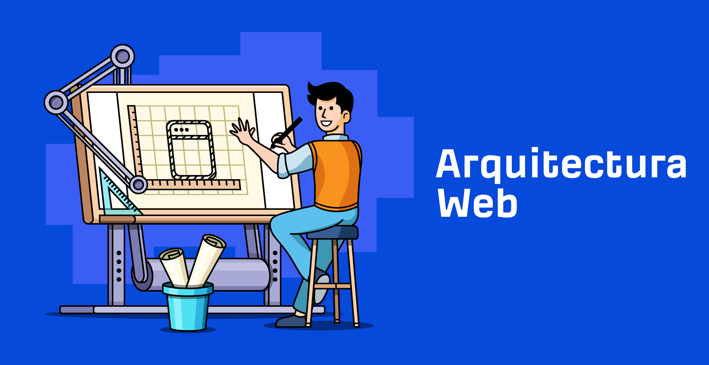
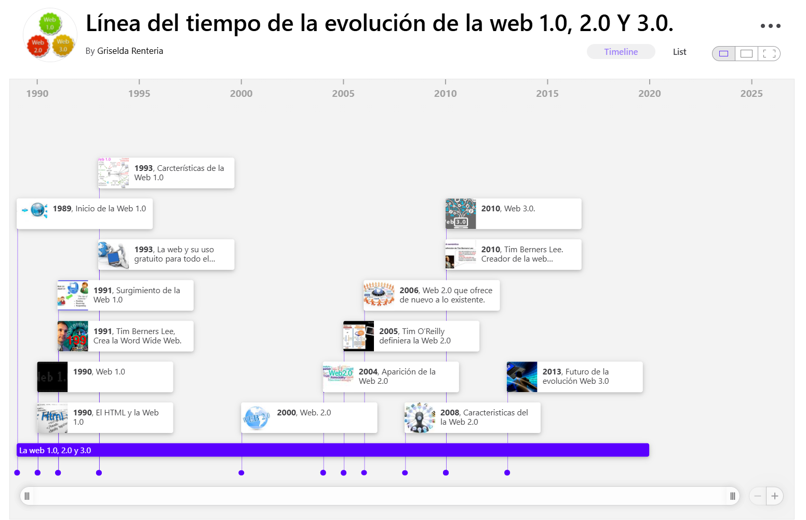
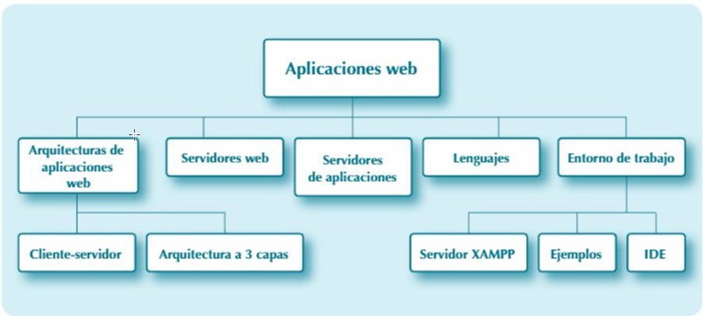
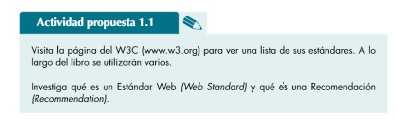
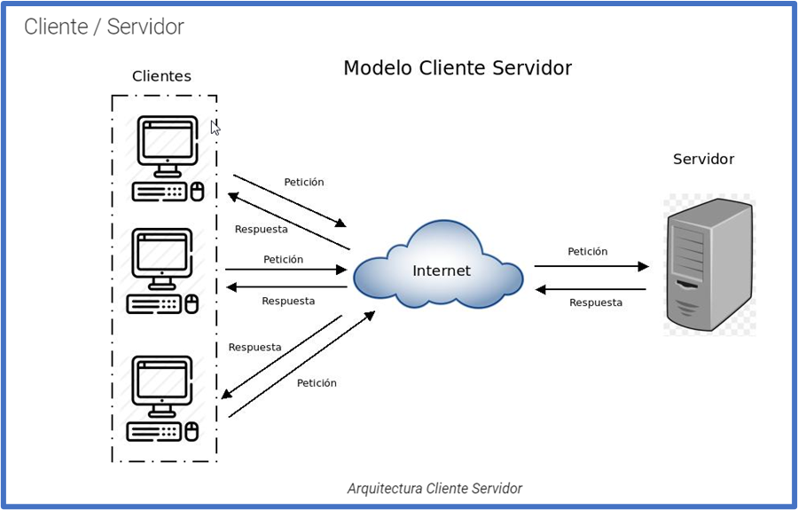
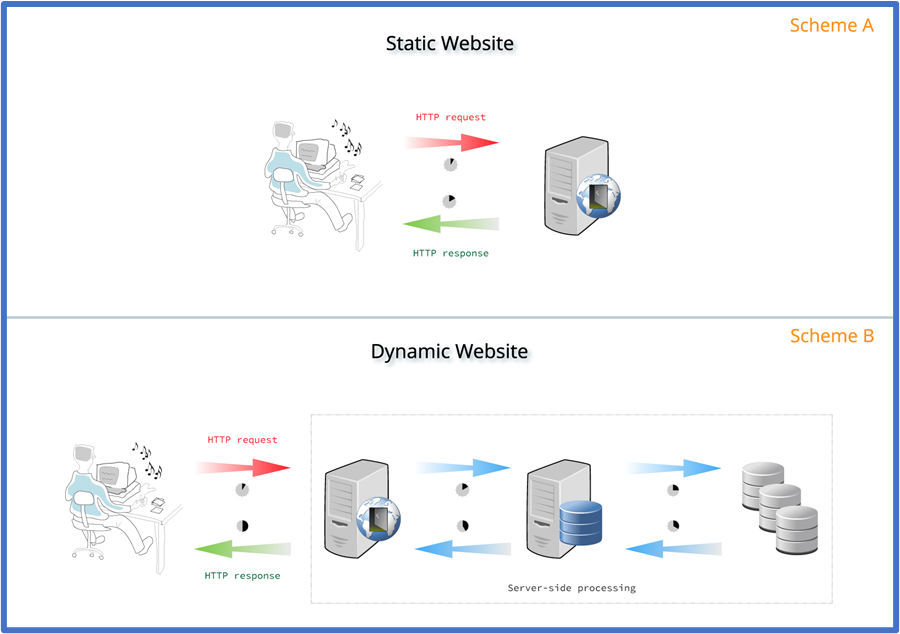
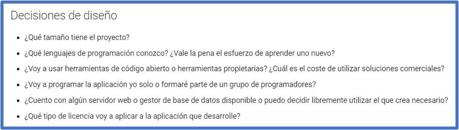
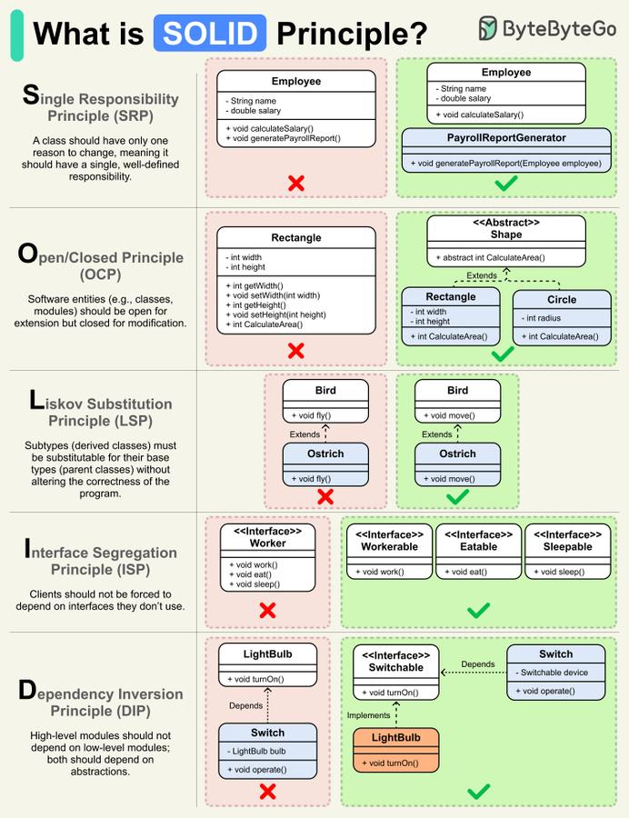
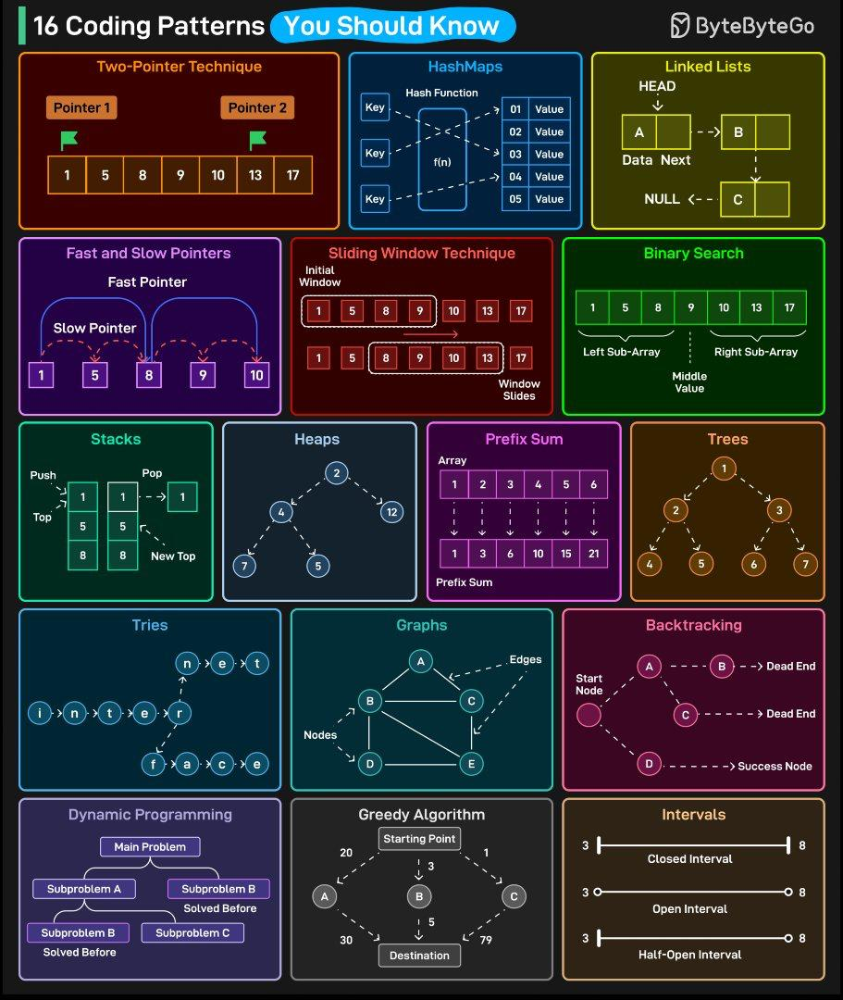

UD1- Sesión 1: Arquitecturas WEB
RA1 Selecciona las arquitecturas y tecnologías de programación Web en entorno servidor, analizando sus capacidades y características propias
Duración estimada: 3 sesiones, Criterios de Evaluación:
- A Se han caracterizado y diferenciado los modelos de ejecución de código en el servidor y en el cliente Web.
- B Se han reconocido las ventajas que proporciona la generación dinámica de páginas Web y sus diferencias con la inclusión de sentencias de guiones en el interior de las páginas Web.
- C Se han identificado los mecanismos de ejecución de código en los servidores Web.
- D Se han reconocido las funcionalidades que aportan los servidores de aplicaciones y su integración con los servidores Web.
- E Se han identificado y caracterizado los principales lenguajes y tecnologías relacionados con la programación Web en entorno servidor.
- F Se han verificado los mecanismos de integración de los lenguajes de marcas con los lenguajes de programación en entorno servidor.
- G Se han reconocido y evaluado las herramientas de programación en entorno servidor.

1 Introducción
La web actual ha evolucionado desde páginas HTML estáticas hasta aplicaciones complejas, dinámicas, seguras, accesibles y conectadas a múltiples servicios. Hoy una aplicación web puede incluir:
- una interfaz en el navegador;
- lógica de negocio en el servidor;
- acceso a bases de datos;
- APIs REST o GraphQL;
- autenticación de usuarios;
- integración con servicios externos;
- despliegue en hosting tradicional, contenedores, nube o plataformas serverless.
En el desarrollo web en entorno servidor, el objetivo principal es construir aplicaciones capaces de recibir peticiones, procesarlas, consultar o modificar datos y devolver una respuesta adecuada al cliente.
Así, la web ha evolucionado significativamente desde sus inicios, transformando la manera en que interactuamos en línea. Un breve resumen de su historia podría ser:

Comenzaremos esta unidad repasando algunos conceptos importantes en relación a las aplicaciones Web:

1.1 W3C
El World Wide Web Consortium (W3C) es una organización internacional que desarrolla estándares para la web. Aquí tienes algunas de sus principales utilidades:
- Establecimiento de estándares : El W3C crea y mantiene estándares web como HTML, CSS y XML, asegurando que los desarrolladores tengan un conjunto común de reglas para construir sitios y aplicaciones web.
- Interoperabilidad : Al seguir los estándares del W3C, los desarrolladores pueden crear sitios web que funcionen de manera consistente en diferentes navegadores y dispositivos, mejorando la experiencia del usuario.
- Accesibilidad : El W3C promueve la accesibilidad web a través de iniciativas como las Pautas de Accesibilidad para el Contenido Web (WCAG), ayudando a que las páginas web sean accesibles para personas con discapacidades.
- Innovación : Al desarrollar nuevas tecnologías y estándares, el W3C impulsa la innovación en la web, permitiendo la creación de aplicaciones más avanzadas y funcionales.
- Seguridad : El W3C trabaja en estándares de seguridad para proteger la información y la privacidad de los usuarios en la web.
En resumen, el W3C juega un papel crucial en el desarrollo y la evolución de la web, asegurando que sea accesible, segura y funcional para todos.
Actividad 1
Actividad 1
Busca en la web W3C algunos ejemplos de por qué su uso

2 Arquitecturas Web: Cliente y Servidor
Las arquitecturas web son fundamentales para el diseño y desarrollo de sitios y aplicaciones en línea, ya que determinan cómo se estructuran y organizan.
¿Qué es una Arquitectura Web?
Una arquitectura web se refiere a la estructura general y los componentes que interactúan en un sistema web. Esta incluye el diseño de la infraestructura, la comunicación entre servidores y clientes, y la manera en que se gestionan los datos y la lógica de la aplicación.
Las arquitecturas web más comunes son:
- Monolítica: En esta arquitectura, todos los componentes de la aplicación están integrados en un único código base. Es simple de desarrollar pero puede ser difícil de escalar y mantener.
- Cliente-Servidor: El cliente (generalmente un navegador web) interactúa con el servidor que procesa las solicitudes y devuelve respuestas. Es un modelo clásico en la web.
- Arquitectura de Tres Capas (3-tier): Se divide en capa de presentación (front-end), capa lógica (back-end), y capa de datos (base de datos). Esto separa la lógica de negocio y la presentación, facilitando el mantenimiento y la escalabilidad.
- Microservicios: Cada función de la aplicación se desarrolla como un servicio independiente que puede escalar y desplegarse por separado. Es popular en sistemas modernos por su flexibilidad y escalabilidad.
2.1 Modelo Cliente Servidor
Una de las arquitecturas de software más utilizadas en informática es la llamada arquitectura cliente / servidor . En este tipo de arquitectura hay una aplicación que hace peticiones (el cliente ) y otra aplicación que está a la espera de recibir esas peticiones y, cuando las recibe, procesarlas y responder (el servidor ).
Ejemplos de esta arquitectura son los servidores NTP (Network Time Protocol), a los cuales se le pide la hora actual para sincronizarse, los servidores FTP (File Transfer Protocol), a los que se les puede enviar y pedir archivos, o precisamente los servidores HTTP , que son los encargados de servir las páginas web.
A) Ejecución en el Cliente
El código del lado cliente se ejecuta en el navegador del usuario. Normalmente incluye:
- HTML, para estructurar el contenido.
- CSS, para definir la presentación visual.
- JavaScript, para añadir interactividad.
- Frameworks o librerías como React, Vue, Angular o Svelte.
Ejemplos de tareas del cliente:
- validar parcialmente un formulario;
- mostrar u ocultar elementos;
- consumir una API mediante
fetch; - actualizar una parte de la página sin recargarla;
- gestionar eventos del usuario.
B) Ejecución en el servidor
El código del lado servidor se ejecuta en una máquina remota, normalmente en un servidor web, servidor de aplicaciones o plataforma cloud.
Se encarga de tareas como:
- procesar formularios;
- validar datos de forma segura;
- consultar bases de datos;
- gestionar sesiones;
- autenticar usuarios;
- generar HTML dinámico;
- devolver respuestas JSON;
- aplicar reglas de negocio.
Según MDN, el código del lado servidor se ocupa de validar datos, usar bases de datos para almacenar y recuperar información y enviar al cliente los datos correctos según cada petición. ([MDN Web Docs][2])

Explicación modelo cliente servidor
2.2 Páginas Web Estáticas / Dinámicas
Una página web puede ser estática o dinámica.
Página estática
Una página estática se entrega al navegador tal como está almacenada en el servidor. Suele estar formada por archivos HTML, CSS, JavaScript, imágenes y otros recursos.
Ejemplo:
cliente → solicita index.html → servidor → devuelve index.html
Es adecuada para:
- webs informativas;
- documentación;
- portfolios;
- landing pages;
- páginas con contenido que cambia poco.
Página dinámica
Una página dinámica se genera total o parcialmente en el servidor en el momento de la petición. El contenido puede cambiar según:
- el usuario autenticado;
- los datos de una base de datos;
- los permisos;
- el idioma;
- la hora;
- los filtros de búsqueda;
- las acciones anteriores del usuario.
Ejemplo:
cliente → solicita /perfil → servidor → consulta usuario → genera respuesta HTML o JSON
Las páginas que viste en el ejemplo anterior se llaman páginas web estáticas . Estas páginas se encuentran almacenadas en su forma definitiva , tal y como se crearon, y su contenido no varía. Son útiles para mostrar una información concreta, y mostrarán esa misma información cada vez que se carguen. La única forma en que pueden cambiar es si un programador la modifica y actualiza su contenido.
En contraposición a las páginas web estáticas, como ya te imaginarás, existen las páginas web dinámicas . Estas páginas, como su nombre indica, se caracterizan porque su contenido cambia en función de diversas variables, como puede ser el navegador que estás usando, el usuario con el que te has identificado, o las acciones que has efectuado con anterioridad.

3 Arquitecturas y lenguajes
Una de las primeras decisiones que tendrás que tomar al programar una aplicación web es la arquitectura que vas a utilizar y la que se adecúa más a tu proyecto por distintas razones.
- Servidores web y servidores de aplicaciones
3.1 Servidor web
Un servidor web recibe peticiones HTTP/HTTPS y devuelve recursos al cliente.
Ejemplos:
- Apache HTTP Server.
- Nginx.
- Caddy.
- Servidores integrados de desarrollo, como el servidor embebido de PHP o Vite en frontend.
Funciones habituales:
- servir archivos estáticos;
- redirigir peticiones;
- gestionar certificados HTTPS;
- aplicar reglas de seguridad;
- actuar como proxy inverso;
- enviar peticiones a una aplicación backend.
3.2 Servidor de aplicaciones
Un servidor de aplicaciones ejecuta la lógica de negocio. En PHP, esta lógica puede estar en scripts PHP, aplicaciones Laravel, Symfony u otros frameworks.
Ejemplos de tecnologías de servidor:
- PHP con Apache/Nginx.
- Node.js con Express, NestJS o Fastify.
- Java con Spring Boot.
- Python con Django, Flask o FastAPI.
- C# con ASP.NET Core.
- Ruby on Rails.
- Go con Gin, Fiber u otros frameworks.
En entornos actuales es habitual separar el servidor web del servidor de aplicaciones. Por ejemplo:
Navegador → Nginx → PHP-FPM → Laravel → Base de datos
3.3 Arquitecturas web principales
A) Arquitectura monolítica
Toda la aplicación se desarrolla y despliega como una única unidad.
Ejemplo:
Aplicación Laravel + vistas Blade + controladores + modelos + base de datos
Ventajas:
- más sencilla para empezar;
- fácil de desplegar en proyectos pequeños o medianos;
- buena opción para aprender;
- menor complejidad inicial.
Inconvenientes:
- puede crecer demasiado;
- cuesta más escalar partes concretas;
- requiere organización interna clara.
Uso recomendado en clase:
- proyectos CRUD;
- paneles de administración;
- aplicaciones educativas;
- primeros proyectos con PHP y Laravel.
B) Arquitectura en tres capas
Divide la aplicación en tres partes:
Presentación → Lógica de negocio → Datos
| Capa | Función | Ejemplo |
|---|---|---|
| Presentación | Muestra la información al usuario | HTML, CSS, JS, Blade |
| Lógica | Procesa reglas de negocio | Controladores, servicios |
| Datos | Guarda y recupera información | MySQL, PostgreSQL, SQLite |
Esta arquitectura ayuda a separar responsabilidades y facilita el mantenimiento.
C) Arquitectura MVC
MVC significa Modelo-Vista-Controlador.
| Elemento | Responsabilidad |
|---|---|
| Modelo | Representa los datos y la lógica asociada |
| Vista | Muestra la información al usuario |
| Controlador | Recibe la petición, coordina el modelo y devuelve una respuesta |
Ejemplo en Laravel:
Ruta → Controlador → Modelo → Vista/JSON
MVC es especialmente importante porque aparecerá en unidades posteriores al trabajar con Laravel.
D) Arquitectura basada en APIs
En una arquitectura basada en APIs, el backend no devuelve necesariamente páginas completas, sino datos estructurados, normalmente JSON.
Ejemplo:
Frontend → GET /api/productos → Backend → JSON
Respuesta:
[
{
"id": 1,
"nombre": "Teclado mecánico",
"precio": 49.99
}
]
Ventajas:
- permite separar frontend y backend;
- facilita aplicaciones móviles;
- permite reutilizar servicios;
- mejora la escalabilidad del sistema.
Tecnologías relacionadas:
- REST.
- GraphQL.
- JSON.
- JWT.
- OAuth2.
- OpenAPI/Swagger.
E) SPA, SSR y SSG
En la web moderna es importante conocer distintos enfoques de renderizado.
| Enfoque | Significado | Característica principal |
|---|---|---|
| SPA | Single Page Application | La interfaz se construye principalmente en el navegador |
| SSR | Server-Side Rendering | El servidor genera HTML en cada petición |
| SSG | Static Site Generation | Las páginas se generan previamente como archivos estáticos |
| ISR/Renderizado híbrido | Generación parcial o bajo demanda | Combina rendimiento y actualización de contenido |
Ejemplos actuales:
- SPA: React, Vue, Angular.
- SSR/SSG: Next.js, Nuxt, Astro.
- Backend tradicional: PHP/Laravel, Django, Spring Boot.
- Backend API: Laravel API, Express, FastAPI, ASP.NET Core.
F) Microservicios
Una arquitectura de microservicios divide la aplicación en servicios pequeños e independientes.
Ejemplo:
Servicio de usuarios
Servicio de productos
Servicio de pagos
Servicio de notificaciones
Ventajas:
- cada servicio puede escalar por separado;
- permite equipos independientes;
- facilita despliegues parciales;
- se adapta bien a grandes sistemas.
Inconvenientes:
- aumenta la complejidad;
- requiere comunicación entre servicios;
- necesita monitorización;
- puede ser excesiva para proyectos pequeños.
G) Serverless y edge computing
En serverless, el desarrollador despliega funciones o servicios sin gestionar directamente los servidores. Los servidores siguen existiendo, pero la infraestructura queda abstraída por el proveedor. Cloudflare define serverless como un modelo de servicios backend basado en uso, donde se puede desplegar código sin gestionar la infraestructura subyacente. ([Cloudflare][4])
Ejemplos:
- AWS Lambda.
- Azure Functions.
- Google Cloud Functions.
- Cloudflare Workers.
- Vercel Functions.
- Netlify Functions.
Usos habituales:
- APIs pequeñas;
- procesamiento de formularios;
- webhooks;
- tareas programadas;
- validación de tokens;
- procesamiento de imágenes;
- funciones cercanas al usuario en la red edge.
Tendencia actual: combinar aplicaciones tradicionales con servicios cloud, APIs externas, funciones serverless y despliegue automatizado.
3.4 Decisiones de diseño
Para tomar la decisión del punto anterior, es muy importante tener en cuenta diferentes aspectos en cuanto a decisiones de diseño, como pueden ser:

Al seleccionar una arquitectura web hay que analizar:
| Criterio | Pregunta clave |
|---|---|
| Tamaño del proyecto | ¿Es una práctica, una app pequeña o un sistema grande? |
| Equipo | ¿Trabaja una persona o varios equipos? |
| Escalabilidad | ¿Necesitará crecer mucho? |
| Mantenimiento | ¿Será fácil modificarlo? |
| Seguridad | ¿Gestiona usuarios, pagos o datos sensibles? |
| Coste | ¿Qué hosting o infraestructura necesita? |
| Rendimiento | ¿Cuántas peticiones debe soportar? |
| Experiencia del equipo | ¿Qué tecnologías conoce el equipo? |
| Tiempo disponible | ¿Hay que desarrollar rápido? |
| Integración | ¿Debe conectarse con APIs externas? |
Para proyectos de aprendizaje en DWES, una arquitectura monolítica organizada con MVC suele ser la opción más adecuada al inicio. Posteriormente puede evolucionar hacia APIs, servicios separados o despliegues cloud.
3.5 Tendencias actuales en arquitectura web
Las tendencias más relevantes que conviene introducir en esta unidad son:
- Backend como API El servidor devuelve JSON y distintos clientes consumen los datos: web, móvil, escritorio o servicios externos.
- Frameworks full-stack Herramientas como Laravel, Next.js, Nuxt o Django permiten construir aplicaciones completas integrando rutas, vistas, datos y despliegue.
- Renderizado híbrido Se combinan páginas estáticas, renderizado en servidor y componentes interactivos en cliente.
- Serverless y edge computing Parte del backend puede ejecutarse como funciones bajo demanda o cerca del usuario para reducir latencia.
- Contenedores y DevOps Docker, CI/CD y despliegues automatizados son cada vez más habituales incluso en proyectos pequeños.
- Seguridad desde el diseño Autenticación, autorización, validación, HTTPS y protección ante vulnerabilidades deben formar parte de la arquitectura desde el inicio.
- Accesibilidad y sostenibilidad web Una web moderna debe ser accesible, eficiente, rápida y usable en distintos dispositivos.
- Uso responsable de IA en desarrollo La IA puede ayudar a explicar código, generar ejemplos o revisar errores, pero el alumnado debe comprender, adaptar y justificar sus propias soluciones.
4 Principios SOLID
Los principios SOLID ayudan a diseñar software mantenible.
| Principio | Idea básica |
|---|---|
| S - Responsabilidad única | Una clase debe tener una razón principal para cambiar |
| O - Abierto/cerrado | El código debe poder ampliarse sin modificarlo constantemente |
| L - Sustitución de Liskov | Una clase hija debe poder usarse como su clase padre |
| I - Segregación de interfaces | Mejor interfaces pequeñas que una interfaz enorme |
| D - Inversión de dependencias | Depender de abstracciones, no de detalles concretos |
En esta unidad no es necesario dominarlos, pero sí reconocer que una buena arquitectura facilita aplicar estos principios más adelante.


5. Seguridad, accesibilidad y buenas prácticas actuales
Una arquitectura web actual no debe centrarse solo en que “funcione”. También debe tener en cuenta:
5.1 Seguridad
Aspectos básicos:
- validación en servidor;
- protección frente a SQL Injection;
- protección XSS;
- gestión segura de sesiones;
- contraseñas cifradas con algoritmos seguros;
- uso de HTTPS;
- control de permisos;
- variables de entorno para credenciales;
- actualización de dependencias.
5.2 Accesibilidad
Las aplicaciones web deben diseñarse para que puedan ser usadas por el mayor número posible de personas. El W3C recomienda usar la versión más reciente de las WCAG; WCAG 2.2 añade nuevos criterios de éxito sobre versiones anteriores y mantiene compatibilidad hacia atrás. ([W3C][7])
Ejemplos de buenas prácticas:
- etiquetas HTML semánticas;
- textos alternativos en imágenes;
- buen contraste;
- navegación mediante teclado;
- formularios correctamente etiquetados;
- mensajes de error comprensibles.
5.3 Mantenibilidad
Buenas prácticas:
- separar responsabilidades;
- evitar duplicación de código;
- nombrar correctamente archivos, clases y métodos;
- usar control de versiones;
- documentar decisiones técnicas;
- aplicar principios SOLID de forma progresiva;
- escribir código legible antes que código “ingenioso”.
6. Actividades propuestas
Actividad 1. Cliente o servidor
Clasifica las siguientes acciones según ocurran principalmente en el cliente, en el servidor o en ambos:
- Mostrar un menú desplegable.
- Consultar los productos de una base de datos.
- Validar si un correo tiene formato correcto.
- Comprobar si una contraseña coincide con la almacenada.
- Cambiar el color de un botón al pasar el ratón.
- Generar una factura en PDF.
- Devolver una lista de usuarios en JSON.
- Mostrar un mensaje de error en un formulario.
Actividad 2. Comparativa de arquitecturas
Realiza una tabla comparativa entre:
- arquitectura monolítica;
- arquitectura en tres capas;
- arquitectura MVC;
- arquitectura basada en APIs;
- microservicios;
- serverless.
Para cada una indica:
- definición;
- ventajas;
- inconvenientes;
- ejemplo de uso;
- tecnología asociada.
Actividad 3. Análisis de una aplicación real
Elige una aplicación web conocida, por ejemplo Moodle, Amazon, YouTube, GitHub, Google Classroom, Instagram o una tienda online.
Investiga y responde:
- ¿Qué partes se ejecutan en el cliente?
- ¿Qué partes crees que se ejecutan en el servidor?
- ¿Qué datos se almacenan?
- ¿Usa contenido dinámico?
- ¿Qué riesgos de seguridad debería controlar?
- ¿Qué tecnologías crees que podrían intervenir?
- ¿Qué tipo de arquitectura podría tener?
Actividad 4. Miniinvestigación sobre tecnologías actuales
Investiga una de estas tecnologías:
- Laravel.
- Node.js.
- Django.
- FastAPI.
- Spring Boot.
- ASP.NET Core.
- Docker.
- Serverless.
- API REST.
- GraphQL.
- Next.js.
- Astro.
Elabora una ficha con:
- qué es;
- para qué se usa;
- lenguaje principal;
- ventajas;
- inconvenientes;
- ejemplo de proyecto donde usarla;
- relación con el desarrollo web en servidor.
7 Actividad Entregable
Entregable
Comienza unaPresentación/Infografía en Canva, Genially etc de realización propia recabando información y conclusiones de este tema. Integra las actividades/curiosidades que has realizado durante su desarrollo.
Tienes más info en la sección "Actividad entregable"
Referencias
| PHP Documentation |
|---|
| https://escuelainformatica.es/blog/historia-de-la-programacion-web |
| https://www.arquitecturajava.com/arquitecturas-web-y-su-evolucion/ |
| "The Architecture of Open Source Applications" -aosabook.org |
| "JavaScript Info" -javascript.info |
| Client-server model - Wikipedia |
| Aitor Medrano |